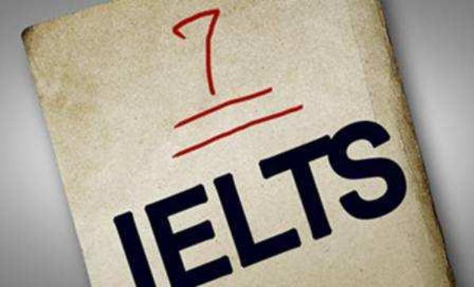

雅思7分是什么水平？能申请哪些国家及大学?排名越靠前的大学对雅思成绩的分数要求也就越高。想要申请较好的海外院校，雅思成绩至关重要。今天新航道雅思培训小编为大家简单介绍下雅思7分能申请哪些学校，供大家参考。

从雅思评分标准上来看，雅思9分：成绩相当不错，能十分自如的使用英语，流利并能完全让人理解。雅思8分：可能偶尔会出现上下不连接的错误，而且表述方面略差。雅思7分：英语成绩良好，虽然有时候会发生不准确或者不适当的观点，但是对于一些复杂英语文字的掌握还是不错的。雅思6分：这个分数就是澳大利亚的移民分数线，以及英国的留学分数线。这个程度，虽然会经常性的出现一些问题，但是意思还是能让人理解的。
想要雅思考试总分考到7分，雅思听力和雅思阅读至少7.5分以上才行，对于我国考生来说写作口语想达到6.5分以上真的不容易，7分需要其他项目多加提分以求平衡。
雅思7分能申请哪些国家及大学?
当然，根据不同的专业，雅思分数的要求也是不一样的，比如同一学历但专业不同，理科对雅思成绩的要求就相应低一点。
而文科类的就要高得多了，特别说语言、翻译、医学、传媒、法律等专业。因为文科类的专业涉及到的语言范围比较广，所以对学生的语言能力要求就非常高，这样才能在上课的时候保证学生们能听得懂，所以，想要考上述提到的相关文科类专业的同学，雅思学习务必要精益求精!
英国
7分：如果你雅思考到7分，且学术能力过硬，那么，可以考虑英国G5精英大学，当然很多大学优势专业也是要求雅思成绩在7分以上，可酌情选择。
6.5分：算比较中等的成绩，排名10—30左右的大学，专业一般要求都在总分6.5，单项6分(优等专业要求7分以上)6分：英国一些大学的最低要求，最低要求不代表就能申请到，而且可选择的学校很有限。所以想申请英国学校的同学还是冲7吧美国
7-7.5分：北美大多本科院校、研究生院校都可以申请。
7分：排名榜前100名大学选择性很广。
6.5分：排名榜前100名中排名靠后大学。
6分：这是佛罗里达大学，德克萨斯农业机械大学，贝勒大学，美国纽约州立大学环境科学与林业科学学院，内布拉斯加大学林肯分校等的本科最低要求。
值得注意的是，有些美国大学更倾向于托福成绩，所以计划去美国留学的同学可根据学校实际招生情况选择学习雅思还是托福。
澳大利亚
雅思成绩在6.5左右基本上不用担心申请澳洲学校的问题。
加拿大
加拿大使馆推出的‘学习直入计划’(SDS)和‘学生合作计划’(SPP)，将雅思成绩作为唯一指定的英语考试，分别要求达到6分和5.5分。加拿大排名前15位的综合类本科院校对雅思成绩的要求都在6.5分，且多数有单项不低于6分的要求。
香港
香港中文大学，香港科技大学，香港理工大学……这三个学校都是可以申请的，不过香港院校还需要你的GPA成绩，GPA不够的话也是不能申请的，所以选择香港留学的话要考虑平时成绩的条件。
以上就是新航道雅思培训小编为大家整理的关于雅思7分是什么水平，能申请哪些学校的介绍，大多数学校都要求雅思最低7分，所以各位考生想要进军好一点的大学的话，小编建议在备考时还是要多多下点功夫的。